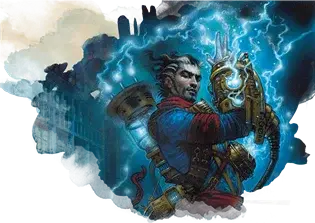

Миззиевый аппарат
Mizzium Apparatus
Чудесный предмет, необычный (требуется настройка Волшебником, Колдуном или Чародеем)

Рекомендованная стоимость 101-500 зм
Новаторство — опасное занятие, по крайней мере, в том смысле, в каком им занимаются маги из Лиги Иззетов. В качестве защиты от рисков провала эксперимента они разработали устройство, помогающее направлять и контролировать их магию. Это устройство представляет собой набор кожаных ремней, гибких трубок, стеклянных цилиндров и пластин, наручей и приспособлений, изготовленных из магического сплава металлов под названием миззий, собранных в единый комплект. Предмет весит 8 фунтов.
Пока вы носите миззиевый аппарат, вы можете использовать его как заклинательную фокусировку. Кроме того, вы можете попытаться наложить заклинание, которое вы не знаете или не подготовили. Заклинание, которое вы выбираете, должно быть в списке заклинаний вашего класса и уровня, для которого у вас есть ячейка заклинаний, и вы должны иметь материальные компоненты для этого заклинания.
Вы расходуете ячейку заклинаний, чтобы наложить заклинание как обычно, но прежде чем сделать это, вы должны совершить проверку Интеллекта (Магия). Сл составляет 10 + удвоенный уровень ячейки заклинаний, которую вы расходуете на накладывание заклинания.
При успешной проверке вы накладываете заклинание как обычно, используя свою Сл заклинаний и базовую характеристику. При провале вы накладываете заклинание, отличное от того, которое намеревались. Случайным образом определите заклинание, которое вы накладываете, совершите бросок по таблицу уровня ячейки заклинаний, которую вы израсходовали. Если ячейка 6-го уровня и выше, совершите бросок по таблице заклинаний 5-го уровня.
Если вы попытаетесь наложить заговор, которого не знаете, Сл для проверки Интеллекта (Магия) равна 10, и при провале никакой эффект не активируется.
Заклинания 1-го уровня
| к6 | Заклинания |
| 1 | Огненные ладони [burning hands] |
| 2 | Снаряд хаоса [chaos bolt] |
| 3 | Сверкающие брызги [color spray] |
| 4 | Огонь фей [faerie fire] |
| 5 | Туманное облако [fog cloud] |
| 6 | Волна грома [thunderwave] |
Заклинания 2-го уровня
| к6 | Заклинания |
| 1 | Размытый образ [blur] |
| 2 | Порыв ветра [gust of wind] |
| 3 | Раскаленный металл [heat metal] |
| 4 | Мельфова кислотная стрела [Melf’s acid arrow] |
| 5 | Палящий луч [scorching ray] |
| 6 | Дребезги [shatter] |
Заклинания 3-го уровня
| к6 | Заклинания |
| 1 | Ужас [fear] |
| 2 | Притворная смерть [feign death] |
| 3 | Огненный шар [fireball] |
| 4 | Газообразная форма [gaseous form] |
| 5 | Метель [sleet storm] |
| 6 | Зловонное облако [stinking cloud] |
Заклинания 4-го уровня
| к4 | Заклинания |
| 1 | Смятение [confusion] |
| 2 | Призыв малых элементалей [conjure minor elementals] |
| 3 | Эвардовы чёрные щупальца [Evard’s black tentackles] |
| 4 | Град [ice storm] |